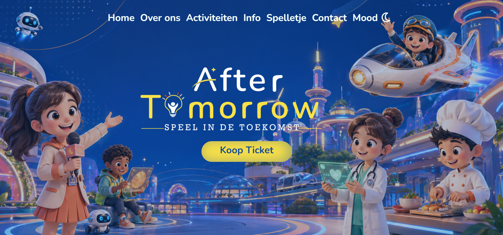
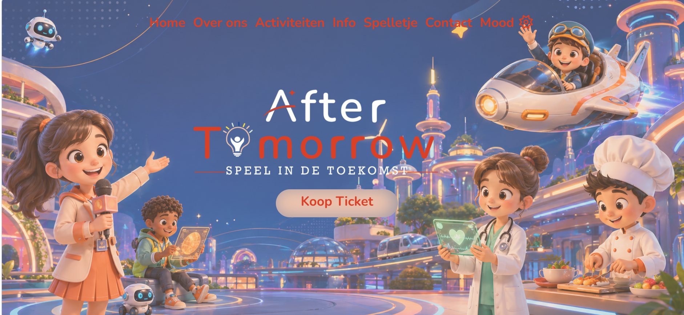

Webdesign
Hieronder vind je mijn projecten rond webdesign en webontwikkeling.
After Tomorrow
Voor dit project heb ik zelf een educatieve website ontworpen en geprogrammeerd. De website heeft een futuristisch thema en is gericht op kinderen.
Ik heb gewerkt aan het ontwerp, de structuur, de navigatie en de verschillende onderdelen van de website.
Websiteontwerp

Normale modus

Alternatieve modus